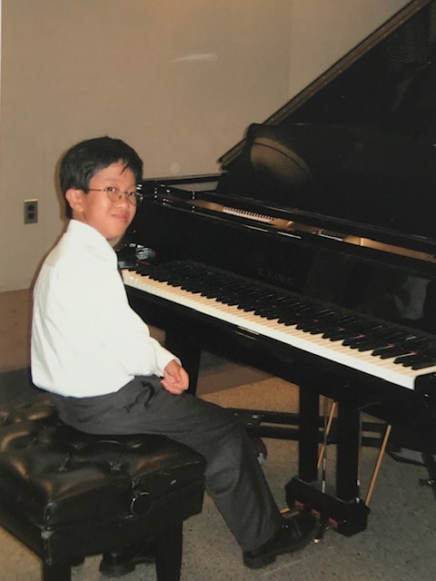

Compositions
Reflection, for solo piano (2024) [PDF]
Numbers Suite, for solo piano (2022) [PDF]
Inspired by a few of my favorite numbers
Inspired by a few of my favorite numbers
Odd One Out, for solo piano (2022) [PDF]
Probably the least classical thing I've written (+ one quote)
Probably the least classical thing I've written (+ one quote)
Piano Concerto in B-flat Minor (2013) [PDF]
First longer-scale work
First longer-scale work
Brass Quintet in A-flat Major (2012) [PDF]
First piece I had publicly premiered
First piece I had publicly premiered
Fantasy in D minor, for solo piano (2005) [PDF]
Second playable piece I wrote
Second playable piece I wrote
